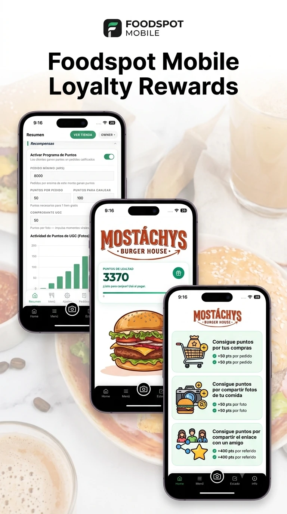

Qué Es un Sistema POS Para Restaurantes: La Verdad Que Necesitás Saber

La Pregunta Que Todo Dueño Se Hace (Y Nadie Responde Bien)
"¿Necesito un POS?"
"¿Me va a ahorrar tiempo realmente?"
"¿O es solo un gasto más?"
Escucho esto todo el tiempo. Desde dueños de pequeños restaurantes en Buenos Aires hasta pizzerías en Córdoba. Y acá está la verdad cruda: sí, necesitás un POS. No es opinión. Es matemática.
Pero no es por las razones que creés.
El Malentendido Más Grande Sobre POS
La mayoría piensa que POS = caja registradora digital. Que es "lo que usamos para cobrar cuando vienen clientes".
Incorrecto.
Un POS es tu sistema de control central. Es donde vive la verdad de tu negocio. Cada peso que entra, cada peso que sale, quién lo manejó, cuándo pasó. Todo está ahí.
Por Qué Importa Más De Lo Que Pensás
Acá está lo que ven dueños que usan sistemas viejos o fragmentados:
- No saben si les están robando. Un mesero "olvidó" registrar una venta. Un cocinero comió sin cobrar. ¿Cómo lo sabés? No lo sabés. Simplemente no ves las discrepancias.
- No saben dónde está el dinero. Vendiste $5,000 esta semana. Pero ¿cuánto entra realmente? ¿Cuánto se fue en costos? ¿Qué producto realmente ganó plata? Sin POS, estás adivinando.
- Tu staff no rinde cuentas. Sin sistema, sin responsabilidad. Es imposible auditar quién hizo qué.
Con Un POS Integrado Como El Nuestro, Todo Cambia:
1. Ves todo en tiempo real — dónde viene el dinero, cuánto vendiste hoy vs. la semana pasada, qué productos venden mejor
2. Tus números cierran — no hay "desapariciones misteriosas" de dinero. Todo está registrado.
3. Tu staff sabe que estás mirando — una vez que tenés un sistema, la disciplina llega sola. Cero frivolidad.
4. Planes el próximo mes — sabés exactamente cuánto ganaste, cuánto gastaste, qué necesitás comprar para reabastecer

Y Acá Está Lo Importante: Una Vez Que Estructurás Tu Negocio, Es Muy Difícil Volver
Cuando pasás de "caos en papel" a "sistema integrado", tu mentalidad cambia. Ya no podés ser sloppy. Ya no podés ignorar los números. Ya sabés exactamente en qué situación estás.
Eso es poder.
Qué Deberías Buscar En Un POS Para Pequeños y Medianos Restaurantes
No necesitás un POS de lujo que cueste miles de pesos. Necesitás:
- Dinero in/out claro — ver exactamente dónde vinieron tus ingresos
- Estadísticas prácticas — qué vendiste más, cuándo, cuáles son tus horas pico
- Recompensas/lealtad integrada — cuando un cliente compra, automáticamente gana puntos (vuelven más seguido)
- Nada complicado — tiene que ser tan fácil que tu staff lo use sin drama
La Verdad Que Nadie Te Dice
El verdadero costo de no tener un buen POS no es el precio de la herramienta. Es todo lo que estás dejando sobre la mesa:
- Dinero que te roban (sin darte cuenta)
- Clientes que no vuelven (porque no tenés recompensas)
- Decisiones mal tomadas (porque no ves los datos)
- Tiempo manejando caos en lugar de crecer
¿Listo para saber exactamente en qué situación está tu negocio?
Probá GetQRCamera gratis — Sistema POS completo integrado. Sin tarjeta de crédito. Sin sorpresas ocultas.